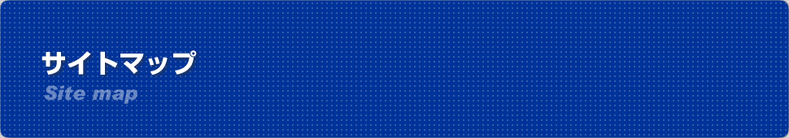

<?php
require_once 'include/header.php';

$header_obj = new Header();

$header_obj->fncFacebookMeta_function=true;

$header_obj->title_page='ワーホリ協会サイトマップ';
$header_obj->description_page='日本ワーキング・ホリデー協会のサイトマップです。ここからお探しのページに移動することができます。';

$header_obj->fncMenuHead_imghtml = '';
$header_obj->fncMenuHead_h1text = '日本ワーキング・ホリデー協会ＷＥＢサイトマップ';

$header_obj->display_header();

?>
	<div id="maincontent">
	  <?php echo $header_obj->breadcrumbs(); ?>
	  <h2 class="sec-title">サイトマップ</h2>
	  <div id="sitemapbox">
	  <ul class="smap00">
	    <li><a href="index.html">トップページ</a>
		  <ul class="smap01">
		    <li><a href="/member">メンバーページ</a></li>
			<li><a href="/mem">メンバー登録</a></li>
			<li><a href="/katsuyou.html">日本ワーキング・ホリデー協会活用ガイド</a></li>
			<li><a href="system.html">ワーキング・ホリデー制度について</a></li>
			<li><a href="start.html">はじめてのワーキング・ホリデー</a>
			  <ul class="smap02">
			        <li><a href="step1.html">STEP1 ワーキングホリデー（ワーホリ）とは</a></li>
				<li><a href="step2.html">STEP2 目標を立てよう</a></li>
				<li><a href="step3.html">STEP3 行き先は決まりましたか？</a></li>
				<li><a href="step4.html">STEP4 渡航先が決まったら準備に入りましょう</a></li>
				<li><a href="step5.html">STEP5 まもなく出発ですね</a></li>
				<li><a href="step6.html">STEP6 渡航中の手続きと留意点</a></li>
				<li><a href="step7.html">STEP7 あなたのワーホリはどうでしたか？</a></li>
			  </ul>
			</li>

			<li>国別ワーキングホリデー（ワーホリ）ガイド
			  <ul class="smap02">
		                <li><a href="/wh/australia/">オーストラリアワーキングホリデー（ワーホリ）ガイド</a></li>
				<li><a href="/wh/canada/">カナダワーキングホリデー（ワーホリ）ガイド</a></li>
				<li><a href="/wh/tame.php">ワーキングホリデー（ワーホリ）のタメになる話</a></li>
			  </ul>
			</li>

			<li>ワーキングホリデー（ワーホリ）の口コミ・ブログ情報
			  <ul class="smap02">
			        <li><a href="/ja/golden-book">Golden-Bookワーホリ・留学行って来ますノート</a></li>
				<li><a href="/blog/">ワーホリブログ</a></li>
				<li><a href="/blog/australia/">オーストラリアのワーホリブログ</a></li>
				<li><a href="/blog/canada/">カナダのワーホリブログ</a></li>
				<li><a href="/blog/newzealand/">ニュージーランドのワーホリブログ</a></li>
			  </ul>
			</li>

			<li>ワーキングホリデー（ワーホリ）協定国ビザ情報
			  <ul class="smap02">
			    <li><a href="visa/v-aus.html">オーストラリアのワーキングホリデー（ワーホリ）ビザ情報</a></li>
				<li><a href="visa/v-nz.html">ニュージーランドのワーキングホリデー（ワーホリ）ビザ情報</a></li>
				<li><a href="visa/v-can.html">カナダのワーキングホリデー（ワーホリ）ビザ情報</a></li>
				<li><a href="visa/v-kor.html">韓国のワーキングホリデー（ワーホリ）ビザ情報</a></li>
				<li><a href="visa/v-fra.html">フランスのワーキングホリデー（ワーホリ）ビザ情報</a></li>
				<li><a href="visa/v-deu.html">ドイツのワーキングホリデー（ワーホリ）ビザ情報</a></li>
				<li><a href="visa/v-uk.html">イギリスのワーキングホリデー（ワーホリ）ビザ情報</a></li>
				<li><a href="visa/v-ire.html">アイルランドのワーキングホリデー（ワーホリ）ビザ情報</a></li>
				<li><a href="visa/v-dnk.html">デンマークのワーキングホリデー（ワーホリ）ビザ情報</li>
				<li><a href="visa/v-ywn.html">台湾のワーキングホリデー（ワーホリ）ビザ情報</a></li>
				<li><a href="visa/v-hkg.html">香港のワーキングホリデー（ワーホリ）ビザ情報</a></li>
			  </ul>
			</li>

			<li><a href="/country/">ワーキングホリデー（ワーホリ）協定国の一般情報</a>
			  <ul class="smap02">
			        <li><a href="/country/australia/">オーストラリアの国情報</a></li>
				<li><a href="/country/newzealand/">ニュージーランドの国情報</a></li>
				<li><a href="/country/canada/">カナダの国情報</a></li>
				<li><a href="/country/southkorea/">韓国の国情報</a></li>
				<li><a href="/country/france/">フランスの国情報</a></li>
				<li><a href="/country/germany/">ドイツの国情報</a></li>
				<li><a href="/country/unitedkingdom/">イギリスの国情報</a></li>
				<li><a href="/country/ireland/">アイルランドの国情報</a></li>
				<li><a href="/country/denmark/">デンマークの国情報</li>
				<li><a href="/country/taiwan/">台湾の国情報</a></li>
				<li><a href="/country/hongkong/">香港の国情報</a></li>
			  </ul>
			</li>

			<li><a href="/seminar/seminar">ワーキングホリデー（ワーホリ）・留学向け無料セミナー</a>
			  <ul class="smap02">
			        <li><a href="/s/go/<?php echo date('n/Y'); ?>/tokyo/0/0">東京会場でのセミナー（説明会）</a></li>
			        <li><a href="/s/go/<?php echo date('n/Y'); ?>/osaka/0/0">大阪会場でのセミナー（説明会）</a></li>
			        <li><a href="/s/go/<?php echo date('n/Y'); ?>/nagoya/0/0">名古屋会場でのセミナー（説明会）</a></li>
			        <li><a href="/s/go/<?php echo date('n/Y'); ?>/fukuoka/0/0">福岡会場でのセミナー（説明会）</a></li>
			        <li><a href="/s/go/<?php echo date('n/Y'); ?>/okinawa/0/0">沖縄会場でのセミナー（説明会）</a></li>
			  </ul>
			</li>


			<li><a href="event.html">イベントカレンダー</a></li>
			<li><a href="recruit/index.html">求人・求職情報サイト</a>
			  <ul class="smap02">
			    <li>職業紹介の流れ</li>
			  </ul>
			</li>
			<li><a href="return.html">帰国者の方へ</a>
			  <ul class="smap02">
			    <li>帰国者登録</li>
			  </ul>
			</li>

			<li><a href="/ryugaku/">日本ワーキングホリデー（ワーホリ）協会が考える留学</a>
			  <ul class="smap02">
				<li><a href="/ryugaku/ryugaku_eng.html">大学留学に必要な英語力</a></li>
				<li><a href="/ryugaku/ryugaku_hiyou.html">語学留学の費用 </a></li>
				<li><a href="/ryugaku/usa_lang.html">アメリカ語学留学</a></li>
				<li><a href="/ryugaku/usa_univ.html">アメリカ大学留学</a></li>
				<li><a href="/ryugaku/usa_visa.html">アメリカ語学留学ビザ</a></li>
				<li><a href="/ryugaku/usa_sat.html">大学留学に必要な英語以外の試験 </a></li>
				<li><a href="/ryugaku/aus_lang.html">オーストラリア語学留学の特徴 </a></li>
				<li><a href="/ryugaku/aus_univ.html">オーストラリア大学留学</a></li>
				<li><a href="/ryugaku/aus_point.html">オーストラリア語学留学の良い点 </a></li>
				<li><a href="/ryugaku/aus_visa.html">オーストラリア語学留学ビザ </a></li>
				<li><a href="/ryugaku/can_lang.html">カナダ語学留学 </a></li>
				<li><a href="/ryugaku/eng_lang.html">イギリス語学留学 </a></li>
				<li><a href="/ryugaku/eng_univ.html">イギリス大学留学 </a></li>
				<li><a href="/ryugaku/eng_visa.html">イギリス語学留学ビザ </a></li>
				<li><a href="/ryugaku/fiji_lang.html">フィジー語学留学とフィリピン留学 </a></li>
				<li><a href="/ryugaku/ryugaku_jawhm.html">留学に向けて日本ワーキングホリデー（ワーホリ）協会の活用方法 </a></li>
			  </ul>
			</li>

			<li><a href="qa.html">よくある質問</a>
			  <ul class="smap02">
			    <li><a href="qa.html">よくある質問お答え</a></li>
			    <li><a href="qa_aus.html">よくある質問オーストラリア</a></li>
				<li><a href="qa_nz.html">よくある質問ニュージーランド</a></li>
				<li><a href="qa_can.html">よくある質問カナダ</a></li>
				<li><a href="qa_kor.html">よくある質問韓国</a></li>
				<li><a href="qa_fra.html">よくある質問フランス</a></li>
				<li><a href="qa_deu.html">よくある質問ドイツ</a></li>
				<li><a href="qa_uk.html">よくある質問イギリス</a></li>
				<li><a href="qa_ire.html">よくある質問アイルランド</a></li>
				<li><a href="qa_dnk.html">よくある質問デンマーク</a></li>
				<li><a href="qa_ywn.html">よくある質問台湾</a></li>
				<li><a href="qa_hkg.html">よくある質問香港</a></li>
			  </ul>
			</li>
			<li><a href="info.html">お役立ち情報</a></li>
		<!--
			<li><a href="trans.html">翻訳サービス</a></li>
		-->
			<li><a href="school.html">語学学校（海外・国内）</a></li>
		<!--
			<li><a href="support.html">サポート機関（海外・国内）</a></li>
		-->
			<li><a href="hoken.html">サービス（保険・アコモデーション）</a></li>
			<li><a href="http://www.jawhm.or.jp/ja/category/%E3%83%A1%E3%83%87%E3%82%A3%E3%82%A2%E6%8E%B2%E8%BC%89">メディア掲載</a></li>
		<!--
			<li><a href="company.html">企業会員一覧</a></li>
		-->
			<li><a href="attention.html">外国人ワーキング・ホリデー青年</a></li>
			<li><a href="about.html">ワーキングホリデー（ワーホリ）協会について</a></li>

			<li><a href="/office/">アクセス（東京・大阪・名古屋・福岡・沖縄）</a>
			  <ul class="smap02">
				<li><a href="/office/tokyo/">東京オフィス</a></li>
				<li><a href="/office/osaka/">大阪オフィス</a></li>
				<li><a href="/office/nagoya/">名古屋オフィス</a></li>
				<li><a href="/office/fukuoka/">福岡オフィス</a></li>
				<li><a href="/office/okinawa/">沖縄オフィス</a></li>
			  </ul>
			</li>

			<li><a href="mem-com.html">企業会員について</a></li>
			<li><a href="adv.html">広告掲載のご案内</a></li>
			<li><a href="privacy.html">個人情報の取り扱い</a></li>
			<li><a href="about.html">特定商取引に関する表記</a></li>
			<li><a href="e/links.html">リンクについて</a></li>
			<li>サイトマップ</li>
		  </ul>
		 </li>
	  </ul>
	  </div>
	  </div>
	  
	</div>
  
  </div>

<?php fncMenuFooter($header_obj->footer_type); ?>

</body>
</html>